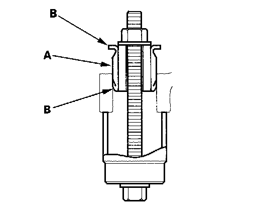

Steering Gear Mount: Service and Repair
Gearbox Mount Cushion Replacement1. Remove the steering gearbox.
2. Position the 34 mm socket wrench (A) on the flange part of the gearbox housing with a washer (B) a 10 x 105 mm flange bolt (C) and a 10 mm nut (D) as shown.

3. Hold the flange bolt with a wrench, and tighten the nut with a wrench. Remove the gearbox mount cushion (E).
4. Apply a mild soap and water solution to the new gearbox mount cushion surface (A) then place it on the gearbox mounting cushion hole.

5. Position the 34 mm socket wrench on the flange part of the gearbox housing with a washer, a flange bolt, and a nut as shown.
6. Install the gearbox mount cushion by tightening the nut until the mount cushion edges (B) contact the gearbox flange surface.
7. Install the steering gearbox.